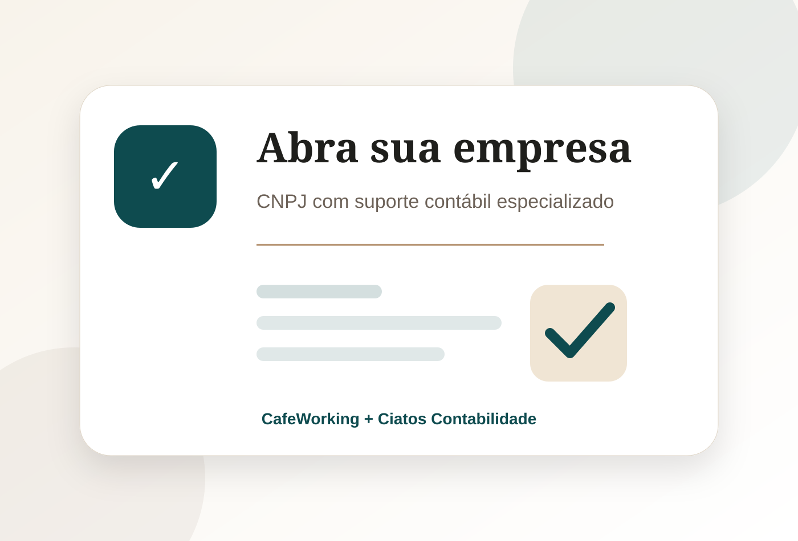
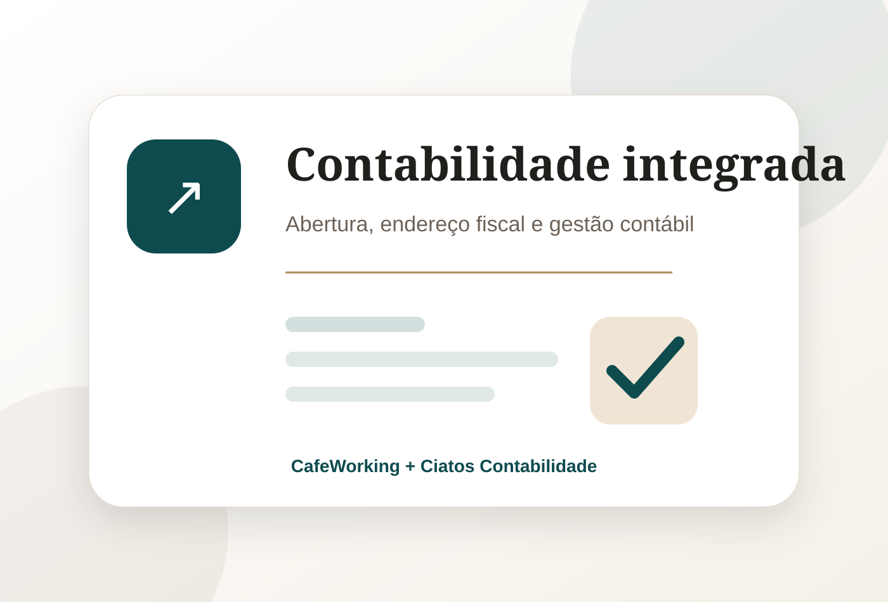

MEI
Formalização simplificada
Ideal para profissionais autônomos que desejam iniciar com baixo custo, regularidade e CNPJ ativo.
- Baixo custo operacional
- Processo rápido
- Ideal para início
Abertura de MEI, empresário individual ou LTDA por R$ 299, contratada e paga online. Com o endereço fiscal Fiscal Pro, a abertura já vem inclusa.

A abertura é realizada pela Ciatos Contabilidade, empresa do Grupo Ciatos especializada em serviços contábeis para empresários, prestadores de serviço e pequenas empresas.
No plano Fiscal Pro (R$ 149/mês) a abertura da empresa está inclusa. No Fiscal Pro + Certificado (R$ 189/mês) você também recebe o certificado digital e-CNPJ A1, válido por 1 ano. Os dois têm fidelidade de 12 meses. As taxas dos órgãos oficiais são pagas à parte.

A Ciatos Contabilidade orienta o cliente nos principais passos para abertura do CNPJ, escolha da atividade, documentação e estrutura inicial.
Ideal para profissionais autônomos que desejam iniciar com baixo custo, regularidade e CNPJ ativo.
Para prestadores de serviço, consultores, profissionais liberais e empresas em crescimento.
Estrutura societária para negócios que precisam de contrato social e organização empresarial.
Comece sua empresa com endereço profissional, recepção e suporte empresarial integrado.
Pagamento à vista por PIX, boleto ou cartão. Depois do pagamento, nossa equipe entra em contato em até 1 dia útil para coletar os dados. As taxas dos órgãos oficiais (Junta Comercial, prefeitura) são pagas à parte.
R$ 299
Nos planos Fiscal Pro e Fiscal Pro + Certificado, a abertura da empresa está inclusa. Fidelidade de 12 meses.
R$ 119/mês
ou R$ 1.285,20 no plano anual (10% de desconto)
R$ 149/mês
ou R$ 1.609,20 no plano anual (10% de desconto)
R$ 189/mês
ou R$ 2.041,20 no plano anual (10% de desconto)
R$ 119/mês
ou R$ 1.285,20 no plano anual (10% de desconto)
R$ 149/mês
ou R$ 1.609,20 no plano anual (10% de desconto)
R$ 189/mês
ou R$ 2.041,20 no plano anual (10% de desconto)
O objetivo é tirar o cliente da informalidade ou do improviso e entregar uma estrutura empresarial mais organizada, com endereço, contabilidade e suporte.
Entendemos a atividade, cidade, sócios e objetivo da empresa.
Definimos natureza jurídica, CNAE, regime tributário e endereço.
A Ciatos conduz os procedimentos de abertura e regularização.
O cliente pode contratar contabilidade, endereço fiscal e estrutura do CafeWorking.
O CafeWorking faz parte do Grupo Ciatos. Por isso, o cliente pode unir ambiente profissional, endereço fiscal e suporte contábil em uma solução integrada para começar melhor.


Ao utilizar o CafeWorking como base empresarial, o cliente passa a contar com uma estrutura real, recepção, cafeteria, salas, áreas comuns e possibilidade de receber clientes em um ambiente premium.
A constituição da empresa é realizada pela Ciatos Contabilidade, empresa do Grupo Ciatos.
R$ 299 à vista. A abertura também está inclusa nos planos de endereço fiscal Fiscal Pro (R$ 149/mês) e Fiscal Pro + Certificado (R$ 189/mês), com fidelidade de 12 meses.
Não. As taxas e emolumentos cobrados pela Junta Comercial, prefeitura e demais órgãos são pagos diretamente pelo cliente. Informamos cada valor antes do protocolo.
Sim, mediante contratação do plano de endereço fiscal e análise de viabilidade da atividade.
Sim. O cliente pode contratar os serviços da Ciatos Contabilidade e receber condições especiais por já ser cliente CafeWorking.
Sim. A abertura de empresa pode ser orientada para clientes em diferentes cidades do Brasil, conforme viabilidade e exigências locais.
A equipe analisa a atividade, faturamento previsto e perfil do negócio para orientar o enquadramento mais adequado.